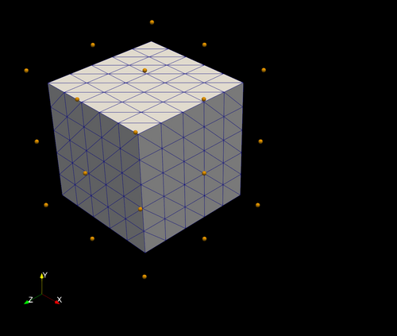

A fast geometry manipulation and creation library made in rust, with a convenient python interface, and very few dependencies. Primary features include:
Here's a demonstration of a plane tail deformed using the Free Form deformer (FFD):
| Variation 1 | Variation 2 | |:-----------------------------------------------:|:-----------------------------------------------:| | | |
Both plane tail variations were created using the Gmac Free Form deformer (FFD).
These instructions assume that Python3 and Cargo are installed on your system. To set up this project, follow these steps:
git clone https://github.com/alexlovric/gmac.git
cd gmac/gmac_py
python3 -m venv .venv
source .venv/bin/activate # In windows /Scripts/activate
python3 -m pip install -r requirements.txt
maturin develop --release
maturin build --release
Heres a simple demonstration where we deform a box mesh using RbfDeformer from the gmac_morph library.
Firstly lets import the required modules and create a box mesh that we intend to deform using the generate_box function:
import gmac
import gmac.morph as morph
import gmac.io as io
import numpy as np
box = gmac.generate_box(
length=[1.0, 1.0, 1.0], centre=[0.0, 0.0, 0.0], resolution=[5, 5, 5]
)
io.write_stl(nodes=box.nodes, cells=box.cells, filename="original_box.stl")
Now lets define some control points to use in the training of our RBF deformer. We use generate_block_cluster to create a grid of 3D points:
original_control_points = np.array(
gmac.generate_block_cluster(
length=[1.2, 1.2, 1.2], centre=[0.0, 0.0, 0.0], resolution=[2, 2, 2]
)
)
io.write_vtp(original_control_points, "original_control_points.vtp")
Now before we define the deformed control points we want to use as the output training data for our RBF deformer, lets select nodes that we want to change from the original control points. GMAC has various selection tools to allow you to select nodes of the mesh, in this case we utilise select_nodes_in_plane_direction to select the nodes in the direction of a plane:
target_control_point_ids = gmac.select_nodes_in_plane_direction(
nodes=original_control_points, origin=[0.3, 0.0, 0.0], normal=[1.0, 0.0, 0.0]
)
io.write_vtp(nodes=original_control_points[target_control_point_ids], filename="target_points.vtp")
We will define our deformed control points by transforming the target points of the original control points. To do this we will utilise one of GMACs various transformation tools, in this case transform_points. We define our transformation using a transformation matrix, in this case we will translate, rotate and scale the target points:
deformed_control_points = original_control_points.copy()
deformed_control_points[target_control_point_ids] = gmac.transform_nodes(
nodes=deformed_control_points[target_control_point_ids],
transformation_matrix=gmac.build_transformation_matrix(
translation=[1.0, 0.0, 0.0],
rotation=[45.0, 0.0, 0.0],
scaling=[1.0, 0.75, 0.75],
),
origin=[0.0, 0.0, 0.0],
)
io.write_vtp(nodes=deformed_control_points, filename="deformed_control_points.vtp")
Now we can set up the RbfDeformer using these original and deformed control points as well as some other parameters specific to the the RBF interpolator. Using this deformer we can deform the original box:
rbf = morph.RbfDeformer(
original_control_points=original_control_points,
deformed_control_points=deformed_control_points,
kernel="gaussian",
epsilon=1.0,
)
box.nodes = rbf.deform(points=box.nodes)
io.write_stl(nodes=box.nodes, cells=box.cells, filename="deformed_box.stl")
Here you can see the original control points and mesh, as well as the deformed control points and mesh:
| Original control points | Deformed control points | |:-----------------------------------------------------------:|:-----------------------------------------------------------:| |  | |
Similarly the Free Form Deformer can be used. This gives more control over the deformation process and can be used for deforming specific parts of the mesh without affecting the rest of the mesh. Starting from the same geometry as before, we can define a design block (the specific region we want to deform) and deform the geometry as follows:
design_block = morph.DesignBlock([0.8, 1.2, 1.2], [0.2, 0.0, 0.0], [0.0, 0.0, 0.0], [2, 2, 2])
free_design_ids = design_block.select_free_design_nodes(geometry, 2)
transformation_matrix = gmac.build_transformation_matrix([0.25, 0.0, 0.0], [45.0, 0.0, 0.0], [1.0, 1.5, 1.5])
deformed_design_nodes = np.array(design_block.nodes)
deformed_design_nodes[free_design_ids] = gmac.transform_nodes(
deformed_design_nodes[free_design_ids],
transformation_matrix,
[0.2, 0., 0.],
)
ffd = morph.FreeFormDeformer(design_block)
geometry.nodes = ffd.deform(geometry.nodes, deformed_design_nodes)
io.write_stl(geometry.nodes, geometry.cells, "deformed_geometry.stl")
| Original control points | Deformed control points | |:-----------------------------------------------------------:|:-----------------------------------------------------------:| | | |
Using the gmac_morph library a box can be deformed using both RBF and FFD tools. In this case we will demonstrate the FFD process. Firstly lets import the modules required and create a box:
use gmac_core::primitives::generate_box;
use gmac_morph::{ffd::FreeFormDeformer, design_block::DesignBlock};
use gmac_core::transformation::{build_transformation_matrix, transform_node};
use gmac_io::vtk::{write_vtu, write_vtp};
fn main() {
let mut geometry =
generate_box([1.0, 1.0, 1.0], [0.0, 0.0, 0.0], [0.0, 0.0, 0.0], [5, 5, 5]);
...
}
Now lets specify the design block that we want to use to map our deformation:
...
let design_block =
DesignBlock::new([0.8, 1.2, 1.2], [0.2, 0.0, 0.0], [0.0, 0.0, 0.0], [2, 2, 2]);
We will now deform the design block nodes so that the deformation can be mapped to the box. First we will clone the nodes. Then select the last layer of the nodes and transform it:
...
let free_design_ids = design_block.select_free_design_nodes(&geometry, Some(2)).unwrap();
let mut deformed_design_nodes = design_block.nodes.clone();
let transformation_matrix =
build_transformation_matrix([0.25, 0.0, 0.0], [45.0, 0.0, 0.0], [1.0, 1.5, 1.5]);
free_design_ids.iter().for_each(|&id| {
transform_node(&mut deformed_design_nodes[id], &transformation_matrix, &[0.2, 0., 0.])
});
...
Lets create the free form deformer and deform the target nodes:
...
let ffd = FreeFormDeformer::new(design_block);
geometry.nodes = ffd.deform(&target_nodes, &deformed_design_nodes).unwrap();
write_vtu(&geometry.nodes, &geometry.cells, Some("target/deformed.vtu")).unwrap();
write_stl(&geometry.nodes, &geometry.cells, Some("target/deformed.stl")).unwrap();
...
The gmac_morph is heavily influenced by PyGEM (https://github.com/mathLab/PyGeM), and the following
Sieger, Menzel, Botsch. On Shape Deformation Techniques for Simulation-based Design Optimization. SEMA SIMAI Springer Series, 2015.
Lombardi, Parolini, Quarteroni, Rozza. Numerical Simulation of Sailing Boats: Dynamics, FSI, and Shape Optimization. Springer Optimization and Its Applications, 2012.